SceneTether
Activity-Gated Value Anchoring for
Long-Horizon Autoregressive Image Animation
One photograph, one minute of motion
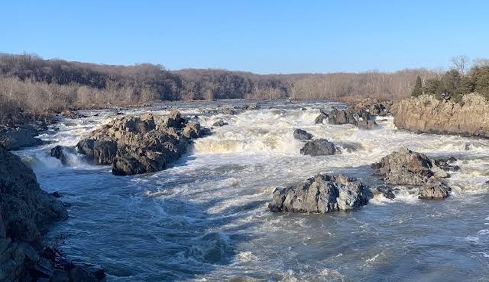
SceneTether is a training-free method for long-horizon image animation. It anchors low-activity regions to the input photograph while letting water, smoke, and fire continue to move.
Inspect the 58-second detail crops and motion maps
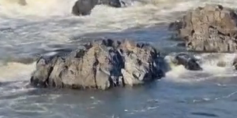
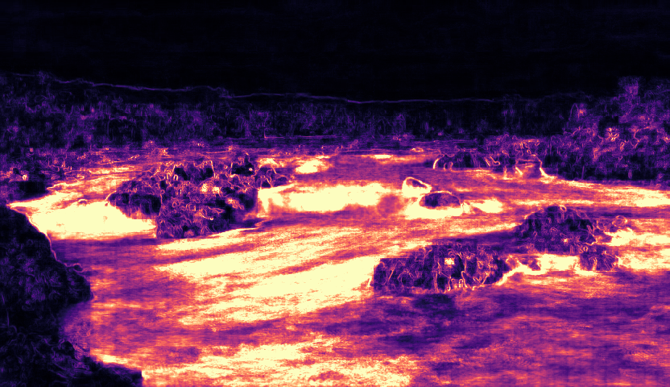
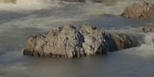
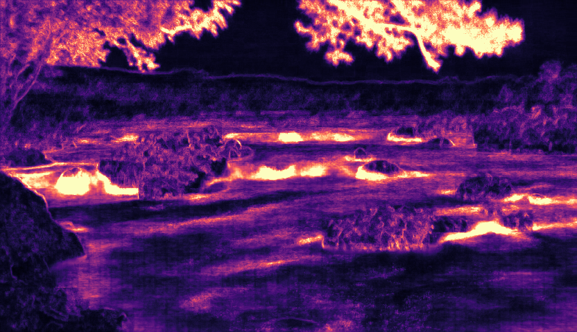
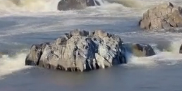
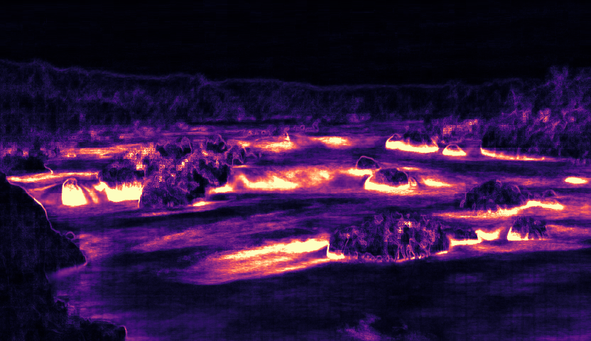
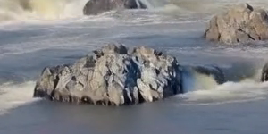
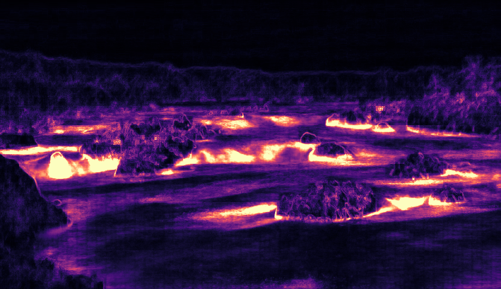
Abstract
Long-horizon image animation has to preserve the scene as moving materials evolve. SceneTether estimates a spatial activity map during warm-up and uses it to anchor low-activity attention values to the source image during autoregressive generation. Active regions retain their recent values. On a Causal Forcing++ evaluation of fixed-camera natural scenes, SceneTether improves source-support PSNR over a spatial Echo-Forcing port by 5.88 dB at one minute and by 7.31 dB at four minutes on the pre-registered subset.
Observation
Autoregressive generators build each new segment from recent output. Over minutes, appearance errors can accumulate even in parts of the scene that should stay still. A flash-flood example shows why persistent scenery and localized motion need different treatment.
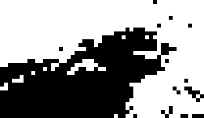
Method
SceneTether uses a frozen activity map to decide where the attention read should retain recent values and where it should blend them toward the input image. It runs on a frozen Causal Forcing++ backbone and adds zero denoising evaluations.

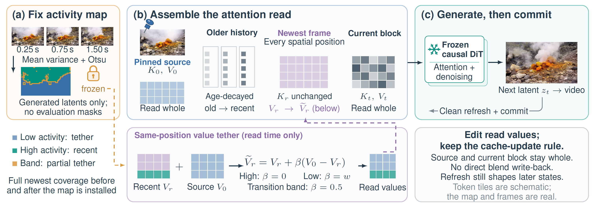
Store the source
Keep the input image’s clean values as a spatial reference.
Estimate activity
Identify moving regions during warm-up and freeze the spatial weights.
Blend at read time
Read co-located source values in stable regions and recent values in active regions.
Activity-gated value anchoring
At spatial position p, β controls how much of the source value enters the attention read. The weight is zero in active regions and increases in static regions.
See the attention read in detail

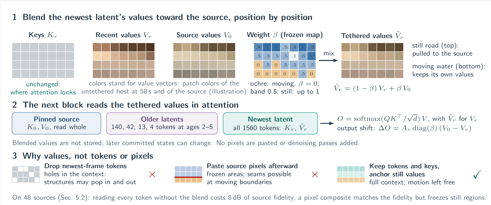
Baseline comparisons
Compare three rollouts generated from the same input on Causal Forcing++.
Rural river
Night rain
Flood at sunset
Firefighting
Long-horizon animation
Explore SceneTether clips at one, two, and four minutes from six fixed-camera scenes.
Tropical shore
Steam vent
Fire pit
Rain on a city window
Farmland sluice
Dust storm
Inspect seawall stills from 60 to 240 seconds
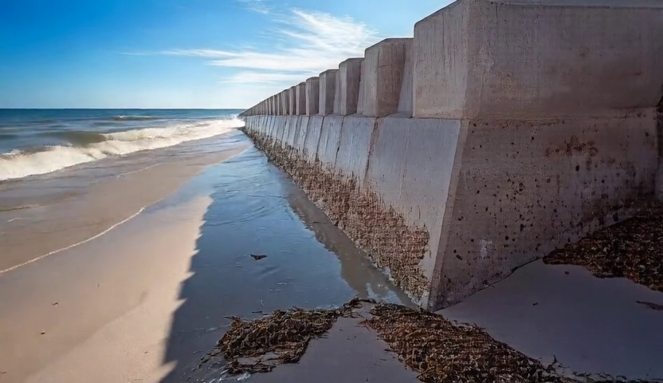
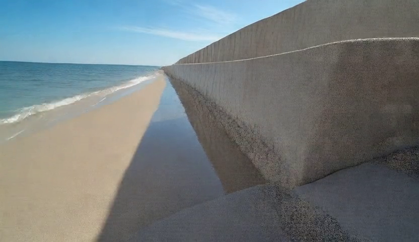
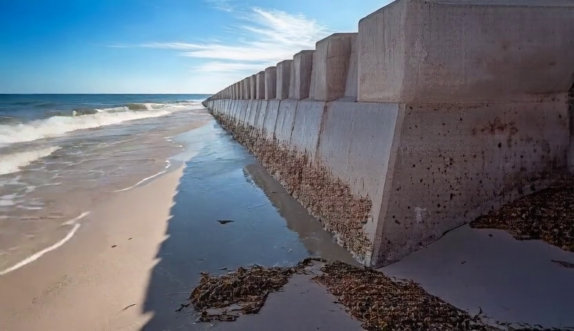
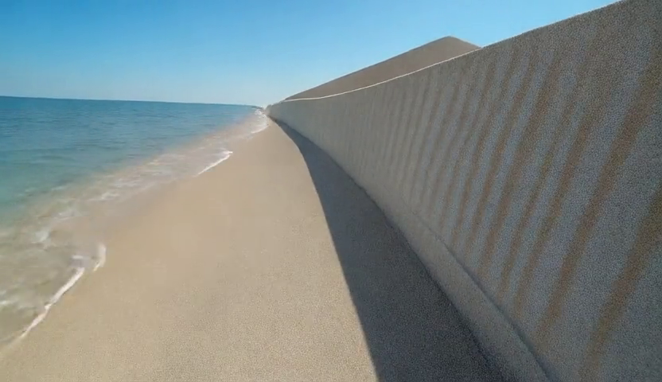
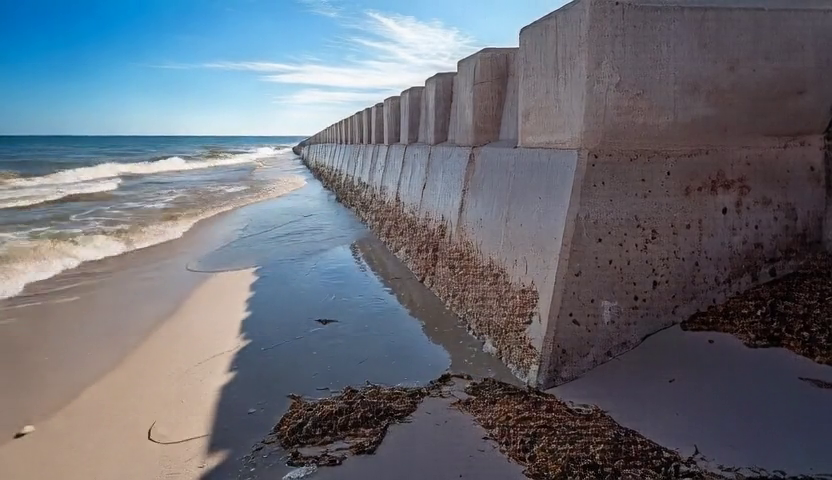
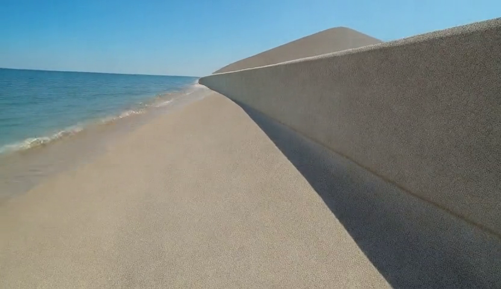
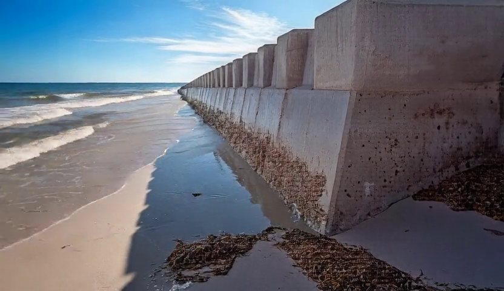
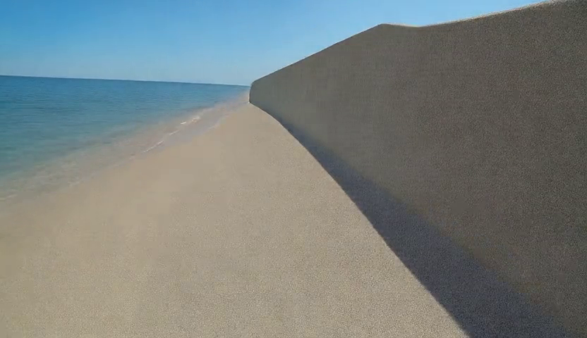
SceneTether appears in the upper row of each pair. Spatial Echo-Forcing appears below.
Articulated motion
Exploratory one-minute rollouts on animal scenes beyond the fixed-camera natural-phenomena evaluation.
BibTeX
@misc{minar2026scenetether,
title = {SceneTether: Activity-Gated Value Anchoring for Long-Horizon Autoregressive Image Animation},
author = {Matiur Rahman Minar and Seunghun Oh and Ganghyeon Jeong and Unsang Park},
year = {2026},
}